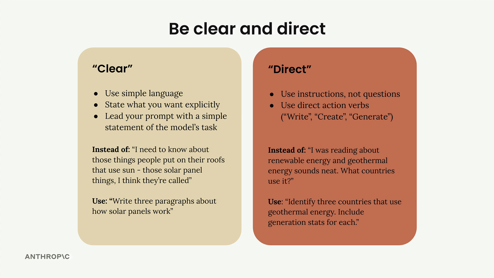

명확하고 직접적으로 표현하기
프롬프트의 첫 번째 줄은 요청 전체에서 가장 중요한 부분입니다. 이 부분이 이후의 모든 내용을 위한 토대를 마련하며, 이를 올바르게 작성하면 결과를 크게 개선할 수 있습니다.
명확하고 직접적으로 표현하기
핵심적인 첫 번째 줄을 작성할 때는 두 가지 핵심 원칙인 명확성과 직접성에 집중해야 합니다. 즉, Claude에게 원하는 것에 대해 모호함이 없도록 간단한 언어를 사용해야 합니다.

명확한 의사소통
"명확하다"는 것은 다음을 의미합니다:
- 누구나 이해할 수 있는 간단한 언어 사용
- 돌려 말하지 않고 원하는 것을 정확하게 명시
- Claude의 작업을 명료하게 앞에 제시
"지붕에 올려두는 태양을 이용하는 물건에 대해 알고 싶어요 - 태양광 패널이라고 하는 것 같은데"처럼 모호하게 쓰는 대신, 직접적으로 "태양광 패널의 작동 원리에 대해 세 단락으로 작성하세요."라고 쓰세요.
직접적인 지시
"직접적이다"는 것은 요청을 구성하는 방식에 초점을 맞춥니다:
- 질문이 아닌 지시문 사용
- "작성하세요", "만드세요", "생성하세요"와 같은 직접적인 행동 동사로 시작
"재생에너지에 대해 읽다 보니 지열 에너지가 흥미롭던데요. 어느 나라에서 사용하나요?"라고 묻는 대신, "지열 에너지를 사용하는 세 나라를 찾아보세요. 각 나라의 발전 통계를 포함하세요."라고 써보세요.
실제로 적용하기
이 기법을 실제로 살펴보겠습니다. "이 사람은 무엇을 먹어야 할까요?"라는 단순한 약한 프롬프트로 시작해, 명확하고 직접적인 접근 방식을 적용할 수 있습니다.
개선된 버전은 다음과 같습니다: Generate a one-day meal plan for an athlete that meets their dietary restrictions.
이 수정된 버전은 Claude에게 즉시 다음을 알려줍니다:
- 어떤 행동을 취할지 (생성)
- 무엇을 만들지 (식단 계획)
- 핵심 제약 조건 (하루치, 운동선수용, 식이 제한 충족)
결과가 중요합니다
이 간단한 변화는 성능에 상당한 영향을 미칠 수 있습니다. 예시에서 평가 점수는 2.32에서 3.92로 올랐으며, 이는 단지 첫 번째 줄을 재구성하는 것만으로 이룬 상당한 개선입니다.
핵심 교훈은 Claude가 원하는 것을 추측해야 하는 상대가 아니라, 명확한 방향이 필요한 유능한 조수처럼 대할 때 가장 잘 반응한다는 점입니다. 직접적인 행동 동사로 강하게 시작하고, 작업을 구체적으로 명시하면 바로 더 나은 결과를 얻을 수 있습니다.